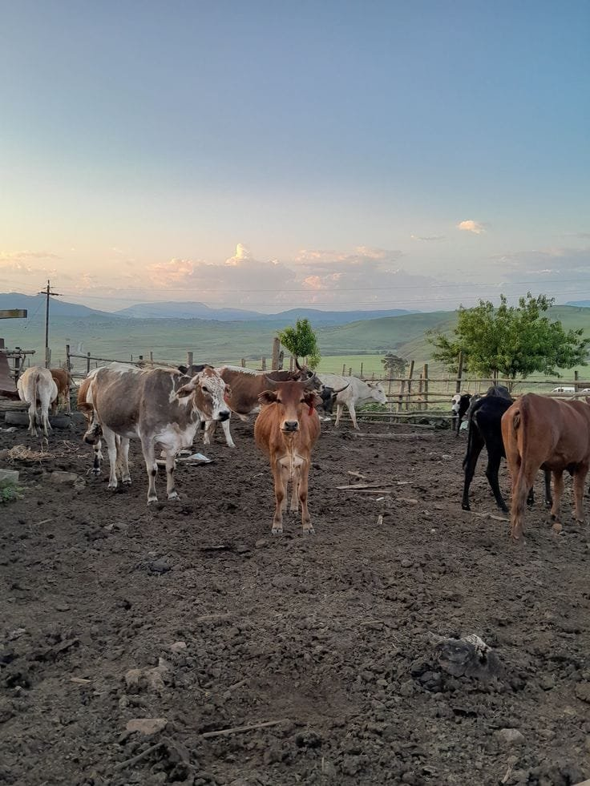

Mission
To raise healthy, well-cared-for livestock and grow quality crops, combining traditional farming knowledge with modern best practice.

Sithole Agriculture & LiveStocks Inc founded by Sithole Njabulo in the year 2021, starting as a small farm of 1 hectare of only 2 cows, 4 goats and 10 chickens. Which after 3-4 grow into a 20 hectare/ 200 000 square meters of fertile land in the KwaZulu-Natal province, grow into a farm of 30 Brahman cows & 25 nguni cows, 30 nguni goats and over 80 chicken(broilers & layers) and a fully functioning Agricultural sites, that farmed corn/maize and potatoes for various organisations. After the initial founding, the farm went from a one man army to a 50 man well oiled working machine.
Mr Sithole built the farm from nothing but love of farming he got from working with his grandmother in her garden and watching vast open fields that went on for miles and miles filled with corn plantations and cows that he saw when he travel with his father and would ask his father who were the owners of all those farms and Sithole would always say that one day he would buy one big farm of his own and name it after his family name SITHOLE, all at young age. So from that age the dream of being a farmer was deeply embedded in his mind and he made sure that through dark and thin, hell and fires, he would be a farmer & a farm owner one day, and that dream was achieved in the year 2029 at the young age of 23 years old.
See what we raise and grow on the Livestock & Crops page.
To raise healthy, well-cared-for livestock and grow quality crops, combining traditional farming knowledge with modern best practice.
To grow into a respected supplier of livestock and produce to the local community and other organisations across the region, creating local jobs as the farm expands. Building a farm built out of nothing love and dedication into one of the largest farms across South Africa that will feed millions of homes foods that are locally grown with no chemicals.
We farm at two locations in KwaZulu-Natal: Mnambithi, Limehill and Bergville. See the contact page for the map and phone numbers.
We raise Nguni and Brahman cattle, Nguni goats and traditional Zulu chickens, and we grow corn, potatoes and tomatoes. Browse everything on the Livestock & Crops page.
Yes. Our enquiry form is for individual buyers and for wholesale organisations buying in bulk.
Fill in the enquiry form with what you are interested in and how much you need. You will see straight away whether it is within what we have on the farm, and we will also receive your enquiry and reply to you.
The farm has grown from a 1-hectare start in 2021 to about 20 hectares (200 000 square metres) of land in KwaZulu-Natal.
The farm has grown from a one-person operation into a team of about 50 people.
We would be glad to hear from you.